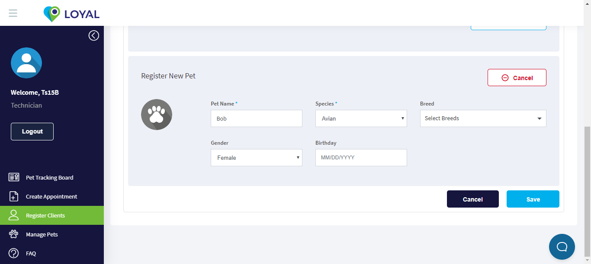

| Given I Should see the Loyal login page loaded sucessfullyy | 1.22s |
| And I should click on "Register client" button on left side menu | 6.48s |
| Element | option | | .lnr-user | cssselector |
|
| Then I should redirect to the Register Client page successfullyy | 2.10s |
| And I fill the "Find parent" details to create a new Parent | 0.65s |
| Element | value | option | ElementType | | //*[contains(concat( " ", @class, " " ), concat( " ", "form-control", " " ))] | Henrry | xpath | Textbox |
|
| Then I should see the newly enabled "No parent record found?" label on left hand side | 0.00s |
| And I click on the "Add new Parent" button to add a new parent | 6.41s |
| Element | option | | .action | cssselector |
|
| Then "Register new parent" Tab should enable after click the Add new parent button | 2.08s |
| And I should see the excel data "RegisterClient" | 2.55s |
| Element | value | option | ElementType | | firstName | firstName | name | Textbox | | lastName | lastName | name | Textbox | | phoneEmail | phoneEmail | name | Textbox |
|
| And I click on the "Add New Pet" to create a pet to the parent | 6.41s |
| Element | option | | .add-new-top-panel-button | cssselector |
|
| And I should see the "Register New Pet" tab after clicking the button | 2.07s |
| And I fill the "Register New Pet" details from excel data "RegisterClient" | 11.66s |
| Element | value | option | ElementType | | name | Pet Name | name | Textbox | | species | Species | id,index | dropdown | | gender | Gender | id,index | dropdown | | //div[@class='Select-placeholder'] | Herrytt | xpath | Textbox |
|
org.openqa.selenium.TimeoutException: Expected condition failed: waiting for visibility of element located by By.xpath: //div[@class='Select-placeholder'] (tried for 5 second(s) with 500 MILLISECONDS interval)
at org.openqa.selenium.support.ui.WebDriverWait.timeoutException(WebDriverWait.java:80)
at org.openqa.selenium.support.ui.FluentWait.until(FluentWait.java:232)
at com.cucumber.common.SetElements.waitElementVisibleByXpath(SetElements.java:228)
at com.cucumber.common.SetElements.setElementByXpath(SetElements.java:117)
at com.cucumber.common.CommonSteps.ExceldataCriteriaOf(CommonSteps.java:763)
at com.cucumber.definition.admin.RegisterClient.i_fill_the_details_from_excel_data(RegisterClient.java:396)
at ✽.And I fill the "Register New Pet" details from excel data "RegisterClient"(B_RegisterClient.feature:26)
Caused by: org.openqa.selenium.NoSuchElementException: Cannot locate an element using By.xpath: //div[@class='Select-placeholder']
For documentation on this error, please visit: http://seleniumhq.org/exceptions/no_such_element.html
Build info: version: '3.4.0', revision: 'unknown', time: 'unknown'
System info: host: 'THILINA-MOBILE', ip: '169.254.93.131', os.name: 'Windows 10', os.arch: 'amd64', os.version: '10.0', java.version: '1.8.0_202'
Driver info: driver.version: unknown
at org.openqa.selenium.support.ui.ExpectedConditions.lambda$findElement$0(ExpectedConditions.java:883)
at java.util.Optional.orElseThrow(Optional.java:290)
at org.openqa.selenium.support.ui.ExpectedConditions.findElement(ExpectedConditions.java:882)
at org.openqa.selenium.support.ui.ExpectedConditions.access$000(ExpectedConditions.java:44)
at org.openqa.selenium.support.ui.ExpectedConditions$7.apply(ExpectedConditions.java:206)
at org.openqa.selenium.support.ui.ExpectedConditions$7.apply(ExpectedConditions.java:202)
at org.openqa.selenium.support.ui.FluentWait.until(FluentWait.java:209)
at com.cucumber.common.SetElements.waitElementVisibleByXpath(SetElements.java:228)
at com.cucumber.common.SetElements.setElementByXpath(SetElements.java:117)
at com.cucumber.common.CommonSteps.ExceldataCriteriaOf(CommonSteps.java:763)
at com.cucumber.definition.admin.RegisterClient.i_fill_the_details_from_excel_data(RegisterClient.java:396)
at sun.reflect.NativeMethodAccessorImpl.invoke0(Native Method)
at sun.reflect.NativeMethodAccessorImpl.invoke(NativeMethodAccessorImpl.java:62)
at sun.reflect.DelegatingMethodAccessorImpl.invoke(DelegatingMethodAccessorImpl.java:43)
at java.lang.reflect.Method.invoke(Method.java:498)
at cucumber.runtime.Utils$1.call(Utils.java:40)
at cucumber.runtime.Timeout.timeout(Timeout.java:16)
at cucumber.runtime.Utils.invoke(Utils.java:34)
at cucumber.runtime.java.JavaStepDefinition.execute(JavaStepDefinition.java:38)
at cucumber.runtime.StepDefinitionMatch.runStep(StepDefinitionMatch.java:37)
at cucumber.runtime.ExtendedRuntime.runStep(ExtendedRuntime.java:316)
at cucumber.runtime.model.StepContainer.runStep(StepContainer.java:44)
at cucumber.runtime.model.StepContainer.runSteps(StepContainer.java:39)
at cucumber.runtime.model.CucumberScenario.run(CucumberScenario.java:44)
at com.github.mkolisnyk.cucumber.runner.ExtendedExecutionUnitRunner.run(ExtendedExecutionUnitRunner.java:32)
at com.github.mkolisnyk.cucumber.runner.ExtendedFeatureRunner.runChild(ExtendedFeatureRunner.java:99)
at com.github.mkolisnyk.cucumber.runner.ExtendedFeatureRunner.runChild(ExtendedFeatureRunner.java:24)
at org.junit.runners.ParentRunner$3.run(ParentRunner.java:290)
at org.junit.runners.ParentRunner$1.schedule(ParentRunner.java:71)
at org.junit.runners.ParentRunner.runChildren(ParentRunner.java:288)
at org.junit.runners.ParentRunner.access$000(ParentRunner.java:58)
at org.junit.runners.ParentRunner$2.evaluate(ParentRunner.java:268)
at org.junit.runners.ParentRunner.run(ParentRunner.java:363)
at cucumber.runtime.junit.FeatureRunner.run(FeatureRunner.java:70)
at com.github.mkolisnyk.cucumber.runner.ExtendedCucumber.runChild(ExtendedCucumber.java:108)
at com.github.mkolisnyk.cucumber.runner.ExtendedCucumber.runChild(ExtendedCucumber.java:32)
at org.junit.runners.ParentRunner$3.run(ParentRunner.java:290)
at org.junit.runners.ParentRunner$1.schedule(ParentRunner.java:71)
at org.junit.runners.ParentRunner.runChildren(ParentRunner.java:288)
at org.junit.runners.ParentRunner.access$000(ParentRunner.java:58)
at org.junit.runners.ParentRunner$2.evaluate(ParentRunner.java:268)
at org.junit.runners.ParentRunner.run(ParentRunner.java:363)
at com.github.mkolisnyk.cucumber.runner.ExtendedCucumber.run(ExtendedCucumber.java:148)
at com.cucumber.common.ExtraExtendedCucumber.run(ExtraExtendedCucumber.java:37)
at org.junit.runner.JUnitCore.run(JUnitCore.java:137)
at org.junit.runner.JUnitCore.run(JUnitCore.java:115)
at org.testng.junit.JUnit4TestRunner.start(JUnit4TestRunner.java:81)
at org.testng.junit.JUnit4TestRunner.run(JUnit4TestRunner.java:69)
at org.testng.TestRunner$1.run(TestRunner.java:697)
at org.testng.TestRunner.runJUnitWorkers(TestRunner.java:1004)
at org.testng.TestRunner.privateRunJUnit(TestRunner.java:728)
at org.testng.TestRunner.run(TestRunner.java:629)
at org.testng.SuiteRunner.runTest(SuiteRunner.java:366)
at org.testng.SuiteRunner.runSequentially(SuiteRunner.java:361)
at org.testng.SuiteRunner.privateRun(SuiteRunner.java:319)
at org.testng.SuiteRunner.run(SuiteRunner.java:268)
at org.testng.SuiteRunnerWorker.runSuite(SuiteRunnerWorker.java:52)
at org.testng.SuiteRunnerWorker.run(SuiteRunnerWorker.java:86)
at org.testng.TestNG.runSuitesSequentially(TestNG.java:1244)
at org.testng.TestNG.runSuitesLocally(TestNG.java:1169)
at org.testng.TestNG.run(TestNG.java:1064)
at org.apache.maven.surefire.testng.TestNGExecutor.run(TestNGExecutor.java:135)
at org.apache.maven.surefire.testng.TestNGDirectoryTestSuite.executeSingleClass(TestNGDirectoryTestSuite.java:112)
at org.apache.maven.surefire.testng.TestNGDirectoryTestSuite.execute(TestNGDirectoryTestSuite.java:99)
at org.apache.maven.surefire.testng.TestNGProvider.invoke(TestNGProvider.java:146)
at org.apache.maven.surefire.booter.ForkedBooter.invokeProviderInSameClassLoader(ForkedBooter.java:386)
at org.apache.maven.surefire.booter.ForkedBooter.runSuitesInProcess(ForkedBooter.java:323)
at org.apache.maven.surefire.booter.ForkedBooter.main(ForkedBooter.java:143)
|
| And I click on the "Save" button to create a new parent | 0.00s |
| Element | option | | //button[@class='btn loyal-btn-save-update'] | xpath |
|
| And I should see the "Parent successfully saved and invited" confirm the parent created sucessfully | 0.00s |
| Element | option | Validation message | | //p[contains(text(),'Parent successfully saved and invited')] | xpath | Parent successfully saved and invited |
|
| And I click on the ok button of the "Parent successfully saved and invited" validation message | 0.00s |
| Element | option | | //*[contains(concat( " ", @class, " " ), concat( " ", "btn-secondary", " " ))] | xpath |
|
| And I should click the "Pet tracking board" button on the left menu bar | 0.00s |
| Element | option | | //*[contains(concat( " ", @class, " " ), concat( " ", "sidebar__link-title", " " ))] | xpath |
|
|  |